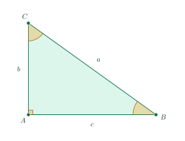
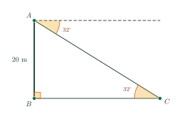
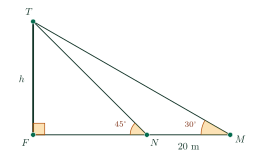

Relationships Between Sides and Angles in a Right TriangleMột số hệ thức giữa cạnh, góc trong tam giác vuông và ứng dụng
Grade 9 · Topic: Trigonometric Ratios in Right TrianglesLớp 9 · Chủ đề: Hệ thức lượng trong tam giác vuông
1Lesson IntroductionGiới thiệu bài học
Learning goalsMục tiêu bài học
By the end of this lesson you can:
Sau bài học này, em có thể:
state the relations between the sides and the angles of a right triangle;
phát biểu được các hệ thức giữa cạnh và góc trong tam giác vuông;
find a side from another side and an acute angle;
tính được một cạnh khi biết một cạnh và một góc nhọn;
solve a right triangle;
giải được tam giác vuông;
measure heights and distances using angles of elevation and depression.
tính được chiều cao, khoảng cách trong thực tế nhờ góc nâng, góc hạ.
2Mathematical VocabularyTừ vựng Toán học
leg – one of the two sides that form the right angle.
Cạnh góc vuông – một trong hai cạnh tạo thành góc vuông.
solve a right triangle – find all unknown sides and angles.
Giải tam giác vuông – tìm tất cả các cạnh và góc chưa biết.
horizontal / line of sight – the level line through the eye / the line from the eye to the object.
Phương nằm ngang / tia nhìn – đường thẳng nằm ngang qua mắt / đường từ mắt tới vật.
angle of elevation / angle of depression – the angle between the line of sight and the horizontal, looking up / looking down.
Góc nâng / góc hạ – góc giữa tia nhìn và phương nằm ngang khi nhìn lên / nhìn xuống.
round to the nearest tenth – keep one decimal place: \(7.71\approx7.7\).
Làm tròn đến hàng phần mười – giữ một chữ số thập phân: \(7{,}71\approx7{,}7\).
3Useful English PhrasesCụm từ tiếng Anh thường gặp
Each leg equals the hypotenuse times the sine of the opposite angle.
Mỗi cạnh góc vuông bằng cạnh huyền nhân với sin góc đối.
Which trigonometric ratio should we use?
Ta nên dùng tỉ số lượng giác nào?
Tangent relates the opposite side to the adjacent side.
Tan liên hệ cạnh đối với cạnh kề.
The side is approximately 7.7 cm.
Cạnh đó xấp xỉ 7,7 cm.
We added the observer’s eye height to obtain the total height.
Ta cộng thêm chiều cao tới mắt người quan sát để được chiều cao cần tìm.
4Prerequisite ReviewÔn tập kiến thức nền
Lesson 11. \(\sin=\dfrac{\text{opp}}{\text{hyp}}\), \(\cos=\dfrac{\text{adj}}{\text{hyp}}\), \(\tan=\dfrac{\text{opp}}{\text{adj}}\), \(\cot=\dfrac{\text{adj}}{\text{opp}}\).
Bài 11. sin = đối/huyền, cos = kề/huyền, tan = đối/kề, cot = kề/đối.
Acute angles. In a right triangle \(\widehat B+\widehat C=90^\circ\).
Góc nhọn. Trong tam giác vuông \(\widehat B+\widehat C=90^\circ\).
5TheoryLý thuyết
5.1 Relations between sides and anglesHệ thức giữa cạnh và góc trong tam giác vuông

TheoremĐịnh lí
In a right triangle, each leg equals
Trong tam giác vuông, mỗi cạnh góc vuông bằng
the hypotenuse times the sine of the opposite angle, or times the cosine of the adjacent angle;
cạnh huyền nhân với sin góc đối hoặc nhân với cos góc kề;
the other leg times the tangent of the opposite angle, or times the cotangent of the adjacent angle.
cạnh góc vuông kia nhân với tan góc đối hoặc nhân với cot góc kề.
5.2 Solving a right triangleGiải tam giác vuông
MethodCách làm
Solving a right triangle is finding all unknown sides and angles. We need two elements, at least one of them a side:
Giải tam giác vuông là tìm tất cả các cạnh và góc chưa biết. Cần biết hai yếu tố, trong đó ít nhất một yếu tố là cạnh:
one side and one acute angle: the other acute angle is \(90^\circ\) minus it; the other sides come from the relations above;
một cạnh và một góc nhọn: góc nhọn còn lại bằng \(90^\circ\) trừ góc đã biết; các cạnh tính theo hệ thức trên;
two sides: the third side comes from the Pythagorean theorem; an angle comes from a ratio (SHIFT sin/cos/tan on the calculator).
hai cạnh: cạnh thứ ba tính theo định lí Pythagore; góc tính từ một tỉ số (bấm SHIFT sin/cos/tan).
Keep the full calculator value until the last step, then round.
Giữ nguyên kết quả trên máy tính đến bước cuối rồi mới làm tròn.
5.3 Angles of elevation and depressionGóc nâng và góc hạ
In practiceTrong thực tế
The angle of elevation is the angle between the horizontal and the line of sight when we look up; the angle of depression is that angle when we look down.
Góc nâng là góc giữa phương nằm ngang và tia nhìn khi nhìn lên; góc hạ là góc đó khi nhìn xuống.
The angle of depression from \(P\) to \(Q\) equals the angle of elevation from \(Q\) to \(P\) (alternate angles).
Góc hạ từ \(P\) nhìn xuống \(Q\) bằng góc nâng từ \(Q\) nhìn lên \(P\) (hai góc so le trong).
When the angle is measured at eye level, add the observer’s eye height to get the height from the ground.
Khi góc được đo ở ngang tầm mắt, cộng thêm chiều cao tới mắt người quan sát để được chiều cao tính từ mặt đất.
6Worked ExamplesVí dụ có lời giải
ExampleVí dụ 1RememberingNhận biết – Hypotenuse and an angleBiết cạnh huyền và một góc
Triangle \(ABC\) is right-angled at \(A\), \(BC=12\) cm and \(\widehat{B}=40^\circ\). Find \(AC\) and \(AB\), rounded to the nearest tenth.
Tam giác \(ABC\) vuông tại \(A\), \(BC=12\) cm và \(\widehat{B}=40^\circ\). Tính \(AC\) và \(AB\) (làm tròn đến hàng phần mười).
Analysis: \(AC\) is opposite \(B\), \(AB\) is adjacent to \(B\).
Phân tích: \(AC\) là cạnh đối, \(AB\) là cạnh kề của góc \(B\).
\(AC=BC\cdot\sin B=12\sin40^\circ\approx7.7\) cm.
\(AC=BC\cdot\sin B=12\sin40^\circ\approx7{,}7\) cm.
\(AB=BC\cdot\cos B=12\cos40^\circ\approx9.2\) cm.
\(AB=BC\cdot\cos B=12\cos40^\circ\approx9{,}2\) cm.
\(AC\approx7.7\) cm, \(AB\approx9.2\) cm.
\(AC\approx7{,}7\) cm, \(AB\approx9{,}2\) cm.
ExampleVí dụ 2UnderstandingThông hiểu – A leg and an angleBiết một cạnh góc vuông và một góc
Triangle \(ABC\) is right-angled at \(A\), \(AB=7\) cm and \(\widehat{B}=35^\circ\). Find \(AC\) and \(BC\) (nearest tenth).
Tam giác \(ABC\) vuông tại \(A\), \(AB=7\) cm và \(\widehat{B}=35^\circ\). Tính \(AC\) và \(BC\) (làm tròn đến hàng phần mười).
Analysis: Tangent relates the opposite side to the adjacent side.
Phân tích: Tan liên hệ cạnh đối với cạnh kề.
\(AC=AB\cdot\tan B=7\tan35^\circ\approx4.9\) cm.
\(AC=AB\cdot\tan B=7\tan35^\circ\approx4{,}9\) cm.
\(AB=BC\cdot\cos B\Rightarrow BC=\dfrac{7}{\cos35^\circ}\approx8.5\) cm.
\(AB=BC\cdot\cos B\Rightarrow BC=\dfrac{7}{\cos35^\circ}\approx8{,}5\) cm.
\(AC\approx4.9\) cm, \(BC\approx8.5\) cm.
\(AC\approx4{,}9\) cm, \(BC\approx8{,}5\) cm.
ExampleVí dụ 3UnderstandingThông hiểu – Solve a right triangleGiải tam giác vuông
Solve triangle \(ABC\), right-angled at \(A\), with \(AB=5\) cm and \(AC=8\) cm (side to the nearest tenth, angles to the nearest degree).
Giải tam giác \(ABC\) vuông tại \(A\), biết \(AB=5\) cm, \(AC=8\) cm (cạnh làm tròn đến hàng phần mười, góc làm tròn đến độ).
Analysis: Two legs are known: use the Pythagorean theorem and \(\tan\).
Phân tích: Biết hai cạnh góc vuông: dùng định lí Pythagore và \(\tan\).
\(BC=\sqrt{5^2+8^2}=\sqrt{89}\approx9.4\) cm.
\(BC=\sqrt{5^2+8^2}=\sqrt{89}\approx9{,}4\) cm.
\(\tan B=\dfrac{8}{5}=1.6\Rightarrow\widehat B\approx58^\circ\); \(\widehat C\approx90^\circ-58^\circ=32^\circ\).
\(\tan B=\dfrac{8}{5}=1{,}6\Rightarrow\widehat B\approx58^\circ\); \(\widehat C\approx90^\circ-58^\circ=32^\circ\).
\(BC\approx9.4\) cm, \(\widehat B\approx58^\circ\), \(\widehat C\approx32^\circ\).
\(BC\approx9{,}4\) cm, \(\widehat B\approx58^\circ\), \(\widehat C\approx32^\circ\).
ExampleVí dụ 4Basic applicationVận dụng thấp – Angle of depressionGóc hạ
From the top \(A\) of a 20 m tall building, a student looks down at a car \(C\) on the ground. The angle of depression is \(32^\circ\). Find the distance \(BC\) from the car to the foot of the building (nearest tenth).
Từ đỉnh \(A\) của một tòa nhà cao 20 m, một bạn học sinh nhìn xuống chiếc ô tô \(C\) trên mặt đất với góc hạ \(32^\circ\). Tính khoảng cách \(BC\) từ ô tô đến chân tòa nhà (làm tròn đến hàng phần mười).

Analysis: The angle of depression equals \(\widehat{ACB}\) (alternate angles).
Phân tích: Góc hạ bằng \(\widehat{ACB}\) (hai góc so le trong).
In right triangle \(ABC\): \(\widehat{C}=32^\circ\), \(AB=20\) m is opposite \(C\), \(BC\) is adjacent to \(C\).
Trong tam giác vuông \(ABC\): \(\widehat{C}=32^\circ\), \(AB=20\) m là cạnh đối, \(BC\) là cạnh kề của góc \(C\).
\(AB=BC\cdot\tan C\Rightarrow BC=\dfrac{20}{\tan32^\circ}\approx32.0\) m.
\(AB=BC\cdot\tan C\Rightarrow BC=\dfrac{20}{\tan32^\circ}\approx32{,}0\) m.
About \(32.0\) m.
Khoảng \(32{,}0\) m.
ExampleVí dụ 5ApplicationVận dụng – Measuring the unreachableĐo chiều cao không đến được
A group cannot reach the foot \(F\) of a tower. From point \(M\) the angle of elevation to the top \(T\) is \(30^\circ\); after walking 20 m straight towards the tower to \(N\), it is \(45^\circ\). Find the height \(h=TF\) (exact value and nearest tenth).
Một nhóm học sinh không đo trực tiếp được chiều cao tháp \(TF\). Từ điểm \(M\), góc nâng nhìn lên đỉnh \(T\) là \(30^\circ\); đi thẳng về phía tháp 20 m đến \(N\) thì góc nâng là \(45^\circ\). Tính chiều cao \(h=TF\) (giá trị đúng và làm tròn đến hàng phần mười).

Analysis: Write \(FM\) and \(FN\) in terms of \(h\), then use \(FM-FN=20\).
Phân tích: Biểu diễn \(FM\), \(FN\) theo \(h\) rồi dùng \(FM-FN=20\).
\(FN=h\cot45^\circ=h\), \(FM=h\cot30^\circ=h\sqrt3\).
\(FN=h\cot45^\circ=h\), \(FM=h\cot30^\circ=h\sqrt3\).
\(h\sqrt3-h=20\Rightarrow h=\dfrac{20}{\sqrt3-1}=\dfrac{20\left(\sqrt3+1\right)}{2}=10\left(\sqrt3+1\right)\) (rationalize the denominator).
\(h\sqrt3-h=20\Rightarrow h=\dfrac{20}{\sqrt3-1}=\dfrac{20\left(\sqrt3+1\right)}{2}=10\left(\sqrt3+1\right)\) (trục căn thức ở mẫu).
\(h\approx27.3\) m. Measuring from two positions avoids measuring the distance to the foot of the tower.
\(h\approx27{,}3\) m. Đo từ hai vị trí giúp không cần đo khoảng cách tới chân tháp.
\(h=10\left(\sqrt3+1\right)\approx27.3\) m.
\(h=10\left(\sqrt3+1\right)\approx27{,}3\) m.
7PracticeBài tập luyện tập
A. Multiple ChoiceA. Trắc nghiệm nhiều lựa chọn
Triangle \(ABC\) is right-angled at \(A\), \(BC=30\) cm and \(\widehat{B}=30^\circ\). Find \(AC\), rounded to the nearest tenth of a centimeter.
Tam giác \(ABC\) vuông tại \(A\), \(BC=30\) cm và \(\widehat{B}=30^\circ\). Tính \(AC\) (làm tròn đến hàng phần mười của xăng-ti-mét).
Answer: b. \(AC\) is opposite angle \(B\): \(AC=BC\cdot\sin B=30\cdot\sin 30^\circ\approx 15.0\) cm.
Đáp án b. \(AC\) là cạnh đối của góc \(B\): \(AC=BC\cdot\sin B=30\cdot\sin 30^\circ\approx 15{,}0\) cm.
Triangle \(ABC\) is right-angled at \(A\), \(AB=9\) m and \(\widehat{B}=48^\circ\). Find \(AC\), rounded to the nearest tenth of a meter.
Tam giác \(ABC\) vuông tại \(A\), \(AB=9\) m và \(\widehat{B}=48^\circ\). Tính \(AC\) (làm tròn đến hàng phần mười của mét).
Answer: d. \(AC\) is opposite and \(AB\) is adjacent to angle \(B\): \(AC=AB\cdot\tan B=9\cdot\tan 48^\circ\approx 10.0\) m.
Đáp án d. \(AC\) là cạnh đối, \(AB\) là cạnh kề của góc \(B\): \(AC=AB\cdot\tan B=9\cdot\tan 48^\circ\approx 10{,}0\) m.
Triangle \(MNP\) is right-angled at \(M\). Which relation is correct?
Tam giác \(MNP\) vuông tại \(M\). Hệ thức nào đúng?
Answer: c. Each leg = hypotenuse × sine of the opposite angle = hypotenuse × cosine of the adjacent angle = other leg × tangent of the opposite angle = other leg × cotangent of the adjacent angle.
Đáp án c. Mỗi cạnh góc vuông = cạnh huyền × sin góc đối = cạnh huyền × cos góc kề = cạnh góc vuông kia × tan góc đối = cạnh góc vuông kia × cot góc kề.
B. True or FalseB. Đúng hoặc sai
Triangle \(MNP\) is right-angled at \(M\). Then \(MP=MN\cdot\cot P\).
Tam giác \(MNP\) vuông tại \(M\). Khi đó \(MP=MN\cdot\cot P\).
True. The hypotenuse is \(NP\); \(MP\) is opposite angle \(N\) and \(MN\) is opposite angle \(P\).
Đúng. Cạnh huyền là \(NP\); \(MP\) là cạnh đối của góc \(N\), \(MN\) là cạnh đối của góc \(P\).
Triangle \(ABC\) is right-angled at \(A\), \(BC=10\) and \(\widehat{B}=65^\circ\). Then \(\widehat{C}=25^\circ\) and \(AB\approx 9.1\) (nearest tenth).
Tam giác \(ABC\) vuông tại \(A\), \(BC=10\) và \(\widehat{B}=65^\circ\). Khi đó \(\widehat{C}=25^\circ\) và \(AB\approx 9{,}1\) (làm tròn đến hàng phần mười).
False. \(AB\) is adjacent to \(B\): \(AB=BC\cdot\cos B\approx 4.2\).
Sai. \(AB\) là cạnh kề của góc \(B\): \(AB=BC\cdot\cos B\approx 4{,}2\).
C. Short AnswerC. Trả lời ngắn
Triangle \(ABC\) is right-angled at \(A\), \(AB=16\) cm and \(\widehat{B}=37^\circ\). Find \(BC\) in centimeters, rounded to the nearest tenth.
Tam giác \(ABC\) vuông tại \(A\), \(AB=16\) cm và \(\widehat{B}=37^\circ\). Tính \(BC\) theo xăng-ti-mét (làm tròn đến hàng phần mười).
Enter a decimal number (e.g. 7.7).
Nhập một số thập phân (ví dụ 7,7).
Answer: 20.0. \(AB=BC\cdot\cos B\Rightarrow BC=\dfrac{16}{\cos 37^\circ}\approx 20.0\) cm.
Đáp số: 20,0. \(AB=BC\cdot\cos B\Rightarrow BC=\dfrac{16}{\cos 37^\circ}\approx 20{,}0\) cm.
Triangle \(ABC\) is right-angled at \(A\), \(AB=3\) cm and \(AC=4\) cm. Find angle \(B\) in degrees, rounded to the nearest degree.
Tam giác \(ABC\) vuông tại \(A\), \(AB=3\) cm và \(AC=4\) cm. Tính số đo góc \(B\) (làm tròn đến độ).
Enter a whole number of degrees.
Nhập số đo theo độ (số nguyên).
Answer: 53. \(\tan B=\dfrac{AC}{AB}=\dfrac{4}{3}\Rightarrow B\approx 53^\circ\) (SHIFT tan).
Đáp số: 53. \(\tan B=\dfrac{AC}{AB}=\dfrac{4}{3}\Rightarrow B\approx 53^\circ\) (bấm SHIFT tan).
D1. Self-practice – RememberingD1. Tự luyện – Mức Nhận biết
Triangle \(MNP\) is right-angled at \(M\). Which side is the hypotenuse?
Tam giác \(MNP\) vuông tại \(M\). Cạnh huyền là cạnh nào?
Answer: b. The hypotenuse is opposite the right angle \(M\).
Đáp án b. Cạnh huyền là cạnh đối diện với góc vuông \(M\).
Triangle \(HIK\) is right-angled at \(H\) and \(\widehat{I}=52^\circ\). Find \(\widehat{K}\).
Tam giác \(HIK\) vuông tại \(H\) và \(\widehat{I}=52^\circ\). Tính \(\widehat{K}\).
Answer: a. The two acute angles of a right triangle are complementary: \(90^\circ-52^\circ=38^\circ\).
Đáp án a. Hai góc nhọn của tam giác vuông phụ nhau: \(90^\circ-52^\circ=38^\circ\).
In a right triangle, each leg equals the other leg × cotangent of …
Trong tam giác vuông, mỗi cạnh góc vuông bằng cạnh góc vuông kia × cot của …
Answer: d. sin, tan go with the opposite angle; cos, cot go with the adjacent angle.
Đáp án d. sin, tan đi với góc đối; cos, cot đi với góc kề.
D2. Self-practice – UnderstandingD2. Tự luyện – Mức Thông hiểu
Triangle \(ABC\) is right-angled at \(A\), \(BC=14\) cm and \(\widehat{C}=64^\circ\). Find \(AC\) (nearest tenth).
Tam giác \(ABC\) vuông tại \(A\), \(BC=14\) cm và \(\widehat{C}=64^\circ\). Tính \(AC\) (làm tròn đến hàng phần mười).
Answer: c. \(AC\) is adjacent to \(C\): \(AC=BC\cdot\cos C\approx 6.1\) cm.
Đáp án c. \(AC\) là cạnh kề của góc \(C\): \(AC=BC\cdot\cos C\approx 6{,}1\) cm.
Triangle \(ABC\) is right-angled at \(A\), \(AC=18\) m and \(\widehat{B}=36^\circ\). Find \(AB\) (nearest tenth).
Tam giác \(ABC\) vuông tại \(A\), \(AC=18\) m và \(\widehat{B}=36^\circ\). Tính \(AB\) (làm tròn đến hàng phần mười).
Answer: d. \(AB=AC\cdot\cot B=\dfrac{18}{\tan 36^\circ}\approx 24.8\) m.
Đáp án d. \(AB=AC\cdot\cot B=\dfrac{18}{\tan 36^\circ}\approx 24{,}8\) m.
Triangle \(ABC\) is right-angled at \(A\), \(AB=9\) and \(\widehat{B}=60^\circ\). Find the exact value of \(BC\).
Tam giác \(ABC\) vuông tại \(A\), \(AB=9\) và \(\widehat{B}=60^\circ\). Tính giá trị đúng của \(BC\).
Answer: b. \(BC=\dfrac{AB}{\cos 60^\circ}\).
Đáp án b. \(BC=\dfrac{AB}{\cos 60^\circ}\).
D3. Self-practice – Basic applicationD3. Tự luyện – Mức Vận dụng thấp
Solve the right triangle \(ABC\) (right angle at \(A\)) given \(BC=18\) and \(\widehat{B}=27^\circ\) (sides to the nearest tenth).
Giải tam giác \(ABC\) vuông tại \(A\), biết \(BC=18\) và \(\widehat{B}=27^\circ\) (cạnh làm tròn đến hàng phần mười).
Answer: d. \(\widehat{C}=90^\circ-27^\circ\); \(AB=BC\cos B\), \(AC=BC\sin B\).
Đáp án d. \(\widehat{C}=90^\circ-27^\circ\); \(AB=BC\cos B\), \(AC=BC\sin B\).
A 7 m ladder leans against a vertical wall and makes a \(67^\circ\) angle with the ground. How high up the wall does it reach (nearest tenth)?
Một chiếc thang dài 7 m dựa vào bức tường thẳng đứng, tạo với mặt đất một góc \(67^\circ\). Đầu thang chạm tường ở độ cao bao nhiêu (làm tròn đến hàng phần mười)?
Answer: a. Height \(=7\cdot\sin 67^\circ\approx 6.4\) m.
Đáp án a. Độ cao \(=7\cdot\sin 67^\circ\approx 6{,}4\) m.
From the top of a 38 m tall building, the angle of depression to a car on the ground is \(34^\circ\). Find the horizontal distance from the car to the foot of the building (nearest tenth).
Từ đỉnh một tòa nhà cao 38 m, góc hạ nhìn xuống một chiếc ô tô trên mặt đất là \(34^\circ\). Tính khoảng cách từ ô tô đến chân tòa nhà (làm tròn đến hàng phần mười).
Answer: b. The angle of depression equals the angle of elevation from the car: distance \(=\dfrac{38}{\tan 34^\circ}\approx 56.3\) m.
Đáp án b. Góc hạ bằng góc nâng nhìn từ ô tô (so le trong): khoảng cách \(=\dfrac{38}{\tan 34^\circ}\approx 56{,}3\) m.
D4. Self-practice – Advanced applicationD4. Tự luyện – Mức Vận dụng
From point \(M\) on level ground, the angle of elevation to the top of a tower is \(30^\circ\). After walking 32 m straight towards the tower to point \(N\), the angle of elevation is \(45^\circ\). Find the height of the tower (nearest tenth).
Từ điểm \(M\) trên mặt đất phẳng, góc nâng nhìn lên đỉnh một tháp là \(30^\circ\). Đi thẳng về phía tháp 32 m đến điểm \(N\) thì góc nâng là \(45^\circ\). Tính chiều cao của tháp (làm tròn đến hàng phần mười).
Answer: d. Let \(h\) be the height: \(h\cot 30^\circ-h\cot 45^\circ=32\Rightarrow h=\dfrac{32}{\cot 30^\circ-\cot 45^\circ}\approx 43.7\) m.
Đáp án d. Gọi \(h\) là chiều cao: \(h\cot 30^\circ-h\cot 45^\circ=32\Rightarrow h=\dfrac{32}{\cot 30^\circ-\cot 45^\circ}\approx 43{,}7\) m.
A student whose eyes are 1.6 m above the ground stands 18 m from a flagpole and sees its top at an angle of elevation of \(35^\circ\). How tall is the flagpole (nearest tenth)?
Một bạn học sinh có mắt cách mặt đất 1,6 m đứng cách cột cờ 18 m, nhìn đỉnh cột cờ với góc nâng \(35^\circ\). Cột cờ cao bao nhiêu mét (làm tròn đến hàng phần mười)?
Answer: c. Height \(=1.6+18\cdot\tan 35^\circ\approx 14.2\) m (add the eye height).
Đáp án c. Chiều cao \(=1{,}6+18\cdot\tan 35^\circ\approx 14{,}2\) m (cộng thêm chiều cao tới mắt).
An airplane climbs at 600 km/h along a path that makes a \(12^\circ\) angle with the horizontal. How many kilometers does it rise in 1.2 minutes (nearest tenth)?
Một máy bay bay lên với vận tốc 600 km/h theo đường tạo với phương nằm ngang một góc \(12^\circ\). Sau 1,2 phút máy bay lên cao được bao nhiêu ki-lô-mét (làm tròn đến hàng phần mười)?
Answer: a. Distance flown \(=600\cdot\dfrac{1.2}{60}=12\) km; height \(=12\cdot\sin 12^\circ\approx 2.5\) km.
Đáp án a. Quãng đường bay \(=600\cdot\dfrac{1{,}2}{60}=12\) km; độ cao \(=12\cdot\sin 12^\circ\approx 2{,}5\) km.
A. Multiple ChoiceA. Trắc nghiệm nhiều lựa chọn
Triangle \(ABC\) is right-angled at \(A\), \(BC=6\) cm and \(\widehat{B}=70^\circ\). Find \(AC\), rounded to the nearest tenth of a centimeter.
Tam giác \(ABC\) vuông tại \(A\), \(BC=6\) cm và \(\widehat{B}=70^\circ\). Tính \(AC\) (làm tròn đến hàng phần mười của xăng-ti-mét).
Answer: d. \(AC\) is opposite angle \(B\): \(AC=BC\cdot\sin B=6\cdot\sin 70^\circ\approx 5.6\) cm.
Đáp án d. \(AC\) là cạnh đối của góc \(B\): \(AC=BC\cdot\sin B=6\cdot\sin 70^\circ\approx 5{,}6\) cm.
Triangle \(ABC\) is right-angled at \(A\), \(AB=8\) m and \(\widehat{B}=25^\circ\). Find \(AC\), rounded to the nearest tenth of a meter.
Tam giác \(ABC\) vuông tại \(A\), \(AB=8\) m và \(\widehat{B}=25^\circ\). Tính \(AC\) (làm tròn đến hàng phần mười của mét).
Answer: a. \(AC\) is opposite and \(AB\) is adjacent to angle \(B\): \(AC=AB\cdot\tan B=8\cdot\tan 25^\circ\approx 3.7\) m.
Đáp án a. \(AC\) là cạnh đối, \(AB\) là cạnh kề của góc \(B\): \(AC=AB\cdot\tan B=8\cdot\tan 25^\circ\approx 3{,}7\) m.
Triangle \(HIK\) is right-angled at \(H\). Which relation is correct?
Tam giác \(HIK\) vuông tại \(H\). Hệ thức nào đúng?
Answer: d. Each leg = hypotenuse × sine of the opposite angle = hypotenuse × cosine of the adjacent angle = other leg × tangent of the opposite angle = other leg × cotangent of the adjacent angle.
Đáp án d. Mỗi cạnh góc vuông = cạnh huyền × sin góc đối = cạnh huyền × cos góc kề = cạnh góc vuông kia × tan góc đối = cạnh góc vuông kia × cot góc kề.
B. True or FalseB. Đúng hoặc sai
Triangle \(HIK\) is right-angled at \(H\). Then \(HI=IK\cdot\sin I\).
Tam giác \(HIK\) vuông tại \(H\). Khi đó \(HI=IK\cdot\sin I\).
False. The hypotenuse is \(IK\); \(HK\) is opposite angle \(I\) and \(HI\) is opposite angle \(K\).
Sai. Cạnh huyền là \(IK\); \(HK\) là cạnh đối của góc \(I\), \(HI\) là cạnh đối của góc \(K\).
Triangle \(ABC\) is right-angled at \(A\), \(BC=15\) and \(\widehat{B}=61^\circ\). Then \(\widehat{C}=29^\circ\) and \(AB\approx 7.3\) (nearest tenth).
Tam giác \(ABC\) vuông tại \(A\), \(BC=15\) và \(\widehat{B}=61^\circ\). Khi đó \(\widehat{C}=29^\circ\) và \(AB\approx 7{,}3\) (làm tròn đến hàng phần mười).
True. \(AB\) is adjacent to \(B\): \(AB=BC\cdot\cos B\approx 7.3\).
Đúng. \(AB\) là cạnh kề của góc \(B\): \(AB=BC\cdot\cos B\approx 7{,}3\).
C. Short AnswerC. Trả lời ngắn
Triangle \(ABC\) is right-angled at \(A\), \(AB=7\) cm and \(\widehat{B}=65^\circ\). Find \(BC\) in centimeters, rounded to the nearest tenth.
Tam giác \(ABC\) vuông tại \(A\), \(AB=7\) cm và \(\widehat{B}=65^\circ\). Tính \(BC\) theo xăng-ti-mét (làm tròn đến hàng phần mười).
Enter a decimal number (e.g. 7.7).
Nhập một số thập phân (ví dụ 7,7).
Answer: 16.6. \(AB=BC\cdot\cos B\Rightarrow BC=\dfrac{7}{\cos 65^\circ}\approx 16.6\) cm.
Đáp số: 16,6. \(AB=BC\cdot\cos B\Rightarrow BC=\dfrac{7}{\cos 65^\circ}\approx 16{,}6\) cm.
Triangle \(ABC\) is right-angled at \(A\), \(AB=7\) cm and \(AC=16\) cm. Find angle \(B\) in degrees, rounded to the nearest degree.
Tam giác \(ABC\) vuông tại \(A\), \(AB=7\) cm và \(AC=16\) cm. Tính số đo góc \(B\) (làm tròn đến độ).
Enter a whole number of degrees.
Nhập số đo theo độ (số nguyên).
Answer: 66. \(\tan B=\dfrac{AC}{AB}=\dfrac{16}{7}\Rightarrow B\approx 66^\circ\) (SHIFT tan).
Đáp số: 66. \(\tan B=\dfrac{AC}{AB}=\dfrac{16}{7}\Rightarrow B\approx 66^\circ\) (bấm SHIFT tan).
D1. Self-practice – RememberingD1. Tự luyện – Mức Nhận biết
Triangle \(ABC\) is right-angled at \(A\). Which side is the hypotenuse?
Tam giác \(ABC\) vuông tại \(A\). Cạnh huyền là cạnh nào?
Answer: c. The hypotenuse is opposite the right angle \(A\).
Đáp án c. Cạnh huyền là cạnh đối diện với góc vuông \(A\).
Triangle \(ABC\) is right-angled at \(A\) and \(\widehat{B}=65^\circ\). Find \(\widehat{C}\).
Tam giác \(ABC\) vuông tại \(A\) và \(\widehat{B}=65^\circ\). Tính \(\widehat{C}\).
Answer: a. The two acute angles of a right triangle are complementary: \(90^\circ-65^\circ=25^\circ\).
Đáp án a. Hai góc nhọn của tam giác vuông phụ nhau: \(90^\circ-65^\circ=25^\circ\).
In a right triangle, each leg equals the other leg × tangent of …
Trong tam giác vuông, mỗi cạnh góc vuông bằng cạnh góc vuông kia × tan của …
Answer: b. sin, tan go with the opposite angle; cos, cot go with the adjacent angle.
Đáp án b. sin, tan đi với góc đối; cos, cot đi với góc kề.
D2. Self-practice – UnderstandingD2. Tự luyện – Mức Thông hiểu
Triangle \(ABC\) is right-angled at \(A\), \(BC=29\) cm and \(\widehat{C}=61^\circ\). Find \(AC\) (nearest tenth).
Tam giác \(ABC\) vuông tại \(A\), \(BC=29\) cm và \(\widehat{C}=61^\circ\). Tính \(AC\) (làm tròn đến hàng phần mười).
Answer: c. \(AC\) is adjacent to \(C\): \(AC=BC\cdot\cos C\approx 14.1\) cm.
Đáp án c. \(AC\) là cạnh kề của góc \(C\): \(AC=BC\cdot\cos C\approx 14{,}1\) cm.
Triangle \(ABC\) is right-angled at \(A\), \(AC=15\) m and \(\widehat{B}=55^\circ\). Find \(AB\) (nearest tenth).
Tam giác \(ABC\) vuông tại \(A\), \(AC=15\) m và \(\widehat{B}=55^\circ\). Tính \(AB\) (làm tròn đến hàng phần mười).
Answer: a. \(AB=AC\cdot\cot B=\dfrac{15}{\tan 55^\circ}\approx 10.5\) m.
Đáp án a. \(AB=AC\cdot\cot B=\dfrac{15}{\tan 55^\circ}\approx 10{,}5\) m.
Triangle \(ABC\) is right-angled at \(A\), \(AB=10\) and \(\widehat{B}=30^\circ\). Find the exact value of \(BC\).
Tam giác \(ABC\) vuông tại \(A\), \(AB=10\) và \(\widehat{B}=30^\circ\). Tính giá trị đúng của \(BC\).
Answer: c. \(BC=\dfrac{AB}{\cos 30^\circ}\).
Đáp án c. \(BC=\dfrac{AB}{\cos 30^\circ}\).
D3. Self-practice – Basic applicationD3. Tự luyện – Mức Vận dụng thấp
Solve the right triangle \(ABC\) (right angle at \(A\)) given \(BC=20\) and \(\widehat{B}=70^\circ\) (sides to the nearest tenth).
Giải tam giác \(ABC\) vuông tại \(A\), biết \(BC=20\) và \(\widehat{B}=70^\circ\) (cạnh làm tròn đến hàng phần mười).
Answer: a. \(\widehat{C}=90^\circ-70^\circ\); \(AB=BC\cos B\), \(AC=BC\sin B\).
Đáp án a. \(\widehat{C}=90^\circ-70^\circ\); \(AB=BC\cos B\), \(AC=BC\sin B\).
A 5 m ladder leans against a vertical wall and makes a \(79^\circ\) angle with the ground. How high up the wall does it reach (nearest tenth)?
Một chiếc thang dài 5 m dựa vào bức tường thẳng đứng, tạo với mặt đất một góc \(79^\circ\). Đầu thang chạm tường ở độ cao bao nhiêu (làm tròn đến hàng phần mười)?
Answer: a. Height \(=5\cdot\sin 79^\circ\approx 4.9\) m.
Đáp án a. Độ cao \(=5\cdot\sin 79^\circ\approx 4{,}9\) m.
From the top of a 15 m tall building, the angle of depression to a car on the ground is \(25^\circ\). Find the horizontal distance from the car to the foot of the building (nearest tenth).
Từ đỉnh một tòa nhà cao 15 m, góc hạ nhìn xuống một chiếc ô tô trên mặt đất là \(25^\circ\). Tính khoảng cách từ ô tô đến chân tòa nhà (làm tròn đến hàng phần mười).
Answer: d. The angle of depression equals the angle of elevation from the car: distance \(=\dfrac{15}{\tan 25^\circ}\approx 32.2\) m.
Đáp án d. Góc hạ bằng góc nâng nhìn từ ô tô (so le trong): khoảng cách \(=\dfrac{15}{\tan 25^\circ}\approx 32{,}2\) m.
D4. Self-practice – Advanced applicationD4. Tự luyện – Mức Vận dụng
From point \(M\) on level ground, the angle of elevation to the top of a tower is \(45^\circ\). After walking 52 m straight towards the tower to point \(N\), the angle of elevation is \(60^\circ\). Find the height of the tower (nearest tenth).
Từ điểm \(M\) trên mặt đất phẳng, góc nâng nhìn lên đỉnh một tháp là \(45^\circ\). Đi thẳng về phía tháp 52 m đến điểm \(N\) thì góc nâng là \(60^\circ\). Tính chiều cao của tháp (làm tròn đến hàng phần mười).
Answer: a. Let \(h\) be the height: \(h\cot 45^\circ-h\cot 60^\circ=52\Rightarrow h=\dfrac{52}{\cot 45^\circ-\cot 60^\circ}\approx 123.0\) m.
Đáp án a. Gọi \(h\) là chiều cao: \(h\cot 45^\circ-h\cot 60^\circ=52\Rightarrow h=\dfrac{52}{\cot 45^\circ-\cot 60^\circ}\approx 123{,}0\) m.
A student whose eyes are 1.7 m above the ground stands 36 m from a flagpole and sees its top at an angle of elevation of \(53^\circ\). How tall is the flagpole (nearest tenth)?
Một bạn học sinh có mắt cách mặt đất 1,7 m đứng cách cột cờ 36 m, nhìn đỉnh cột cờ với góc nâng \(53^\circ\). Cột cờ cao bao nhiêu mét (làm tròn đến hàng phần mười)?
Answer: c. Height \(=1.7+36\cdot\tan 53^\circ\approx 49.5\) m (add the eye height).
Đáp án c. Chiều cao \(=1{,}7+36\cdot\tan 53^\circ\approx 49{,}5\) m (cộng thêm chiều cao tới mắt).
An airplane climbs at 360 km/h along a path that makes a \(20^\circ\) angle with the horizontal. How many kilometers does it rise in 1.2 minutes (nearest tenth)?
Một máy bay bay lên với vận tốc 360 km/h theo đường tạo với phương nằm ngang một góc \(20^\circ\). Sau 1,2 phút máy bay lên cao được bao nhiêu ki-lô-mét (làm tròn đến hàng phần mười)?
Answer: a. Distance flown \(=360\cdot\dfrac{1.2}{60}=7.2\) km; height \(=7.2\cdot\sin 20^\circ\approx 2.5\) km.
Đáp án a. Quãng đường bay \(=360\cdot\dfrac{1{,}2}{60}=7{,}2\) km; độ cao \(=7{,}2\cdot\sin 20^\circ\approx 2{,}5\) km.
A. Multiple ChoiceA. Trắc nghiệm nhiều lựa chọn
Triangle \(ABC\) is right-angled at \(A\), \(BC=23\) cm and \(\widehat{B}=69^\circ\). Find \(AC\), rounded to the nearest tenth of a centimeter.
Tam giác \(ABC\) vuông tại \(A\), \(BC=23\) cm và \(\widehat{B}=69^\circ\). Tính \(AC\) (làm tròn đến hàng phần mười của xăng-ti-mét).
Answer: a. \(AC\) is opposite angle \(B\): \(AC=BC\cdot\sin B=23\cdot\sin 69^\circ\approx 21.5\) cm.
Đáp án a. \(AC\) là cạnh đối của góc \(B\): \(AC=BC\cdot\sin B=23\cdot\sin 69^\circ\approx 21{,}5\) cm.
Triangle \(ABC\) is right-angled at \(A\), \(AB=5\) m and \(\widehat{B}=70^\circ\). Find \(AC\), rounded to the nearest tenth of a meter.
Tam giác \(ABC\) vuông tại \(A\), \(AB=5\) m và \(\widehat{B}=70^\circ\). Tính \(AC\) (làm tròn đến hàng phần mười của mét).
Answer: d. \(AC\) is opposite and \(AB\) is adjacent to angle \(B\): \(AC=AB\cdot\tan B=5\cdot\tan 70^\circ\approx 13.7\) m.
Đáp án d. \(AC\) là cạnh đối, \(AB\) là cạnh kề của góc \(B\): \(AC=AB\cdot\tan B=5\cdot\tan 70^\circ\approx 13{,}7\) m.
Triangle \(ABC\) is right-angled at \(A\). Which relation is correct?
Tam giác \(ABC\) vuông tại \(A\). Hệ thức nào đúng?
Answer: c. Each leg = hypotenuse × sine of the opposite angle = hypotenuse × cosine of the adjacent angle = other leg × tangent of the opposite angle = other leg × cotangent of the adjacent angle.
Đáp án c. Mỗi cạnh góc vuông = cạnh huyền × sin góc đối = cạnh huyền × cos góc kề = cạnh góc vuông kia × tan góc đối = cạnh góc vuông kia × cot góc kề.
B. True or FalseB. Đúng hoặc sai
Triangle \(MNP\) is right-angled at \(M\). Then \(MP=NP\cdot\sin N\).
Tam giác \(MNP\) vuông tại \(M\). Khi đó \(MP=NP\cdot\sin N\).
True. The hypotenuse is \(NP\); \(MP\) is opposite angle \(N\) and \(MN\) is opposite angle \(P\).
Đúng. Cạnh huyền là \(NP\); \(MP\) là cạnh đối của góc \(N\), \(MN\) là cạnh đối của góc \(P\).
Triangle \(ABC\) is right-angled at \(A\), \(BC=20\) and \(\widehat{B}=54^\circ\). Then \(\widehat{C}=36^\circ\) and \(AB\approx 16.2\) (nearest tenth).
Tam giác \(ABC\) vuông tại \(A\), \(BC=20\) và \(\widehat{B}=54^\circ\). Khi đó \(\widehat{C}=36^\circ\) và \(AB\approx 16{,}2\) (làm tròn đến hàng phần mười).
False. \(AB\) is adjacent to \(B\): \(AB=BC\cdot\cos B\approx 11.8\).
Sai. \(AB\) là cạnh kề của góc \(B\): \(AB=BC\cdot\cos B\approx 11{,}8\).
C. Short AnswerC. Trả lời ngắn
Triangle \(ABC\) is right-angled at \(A\), \(AB=25\) cm and \(\widehat{B}=57^\circ\). Find \(BC\) in centimeters, rounded to the nearest tenth.
Tam giác \(ABC\) vuông tại \(A\), \(AB=25\) cm và \(\widehat{B}=57^\circ\). Tính \(BC\) theo xăng-ti-mét (làm tròn đến hàng phần mười).
Enter a decimal number (e.g. 7.7).
Nhập một số thập phân (ví dụ 7,7).
Answer: 45.9. \(AB=BC\cdot\cos B\Rightarrow BC=\dfrac{25}{\cos 57^\circ}\approx 45.9\) cm.
Đáp số: 45,9. \(AB=BC\cdot\cos B\Rightarrow BC=\dfrac{25}{\cos 57^\circ}\approx 45{,}9\) cm.
Triangle \(ABC\) is right-angled at \(A\), \(AB=10\) cm and \(AC=15\) cm. Find angle \(B\) in degrees, rounded to the nearest degree.
Tam giác \(ABC\) vuông tại \(A\), \(AB=10\) cm và \(AC=15\) cm. Tính số đo góc \(B\) (làm tròn đến độ).
Enter a whole number of degrees.
Nhập số đo theo độ (số nguyên).
Answer: 56. \(\tan B=\dfrac{AC}{AB}=\dfrac{15}{10}\Rightarrow B\approx 56^\circ\) (SHIFT tan).
Đáp số: 56. \(\tan B=\dfrac{AC}{AB}=\dfrac{15}{10}\Rightarrow B\approx 56^\circ\) (bấm SHIFT tan).
D1. Self-practice – RememberingD1. Tự luyện – Mức Nhận biết
Triangle \(DEF\) is right-angled at \(D\). Which side is the hypotenuse?
Tam giác \(DEF\) vuông tại \(D\). Cạnh huyền là cạnh nào?
Answer: b. The hypotenuse is opposite the right angle \(D\).
Đáp án b. Cạnh huyền là cạnh đối diện với góc vuông \(D\).
Triangle \(DEF\) is right-angled at \(D\) and \(\widehat{E}=55^\circ\). Find \(\widehat{F}\).
Tam giác \(DEF\) vuông tại \(D\) và \(\widehat{E}=55^\circ\). Tính \(\widehat{F}\).
Answer: a. The two acute angles of a right triangle are complementary: \(90^\circ-55^\circ=35^\circ\).
Đáp án a. Hai góc nhọn của tam giác vuông phụ nhau: \(90^\circ-55^\circ=35^\circ\).
In a right triangle, each leg equals hypotenuse × cosine of …
Trong tam giác vuông, mỗi cạnh góc vuông bằng cạnh huyền × cos của …
Answer: a. sin, tan go with the opposite angle; cos, cot go with the adjacent angle.
Đáp án a. sin, tan đi với góc đối; cos, cot đi với góc kề.
D2. Self-practice – UnderstandingD2. Tự luyện – Mức Thông hiểu
Triangle \(ABC\) is right-angled at \(A\), \(BC=10\) cm and \(\widehat{C}=57^\circ\). Find \(AC\) (nearest tenth).
Tam giác \(ABC\) vuông tại \(A\), \(BC=10\) cm và \(\widehat{C}=57^\circ\). Tính \(AC\) (làm tròn đến hàng phần mười).
Answer: d. \(AC\) is adjacent to \(C\): \(AC=BC\cdot\cos C\approx 5.4\) cm.
Đáp án d. \(AC\) là cạnh kề của góc \(C\): \(AC=BC\cdot\cos C\approx 5{,}4\) cm.
Triangle \(ABC\) is right-angled at \(A\), \(AC=12\) m and \(\widehat{B}=63^\circ\). Find \(AB\) (nearest tenth).
Tam giác \(ABC\) vuông tại \(A\), \(AC=12\) m và \(\widehat{B}=63^\circ\). Tính \(AB\) (làm tròn đến hàng phần mười).
Answer: c. \(AB=AC\cdot\cot B=\dfrac{12}{\tan 63^\circ}\approx 6.1\) m.
Đáp án c. \(AB=AC\cdot\cot B=\dfrac{12}{\tan 63^\circ}\approx 6{,}1\) m.
Triangle \(ABC\) is right-angled at \(A\), \(AB=14\) and \(\widehat{B}=60^\circ\). Find the exact value of \(AC\).
Tam giác \(ABC\) vuông tại \(A\), \(AB=14\) và \(\widehat{B}=60^\circ\). Tính giá trị đúng của \(AC\).
Answer: b. \(AC=AB\cdot\tan 60^\circ\).
Đáp án b. \(AC=AB\cdot\tan 60^\circ\).
D3. Self-practice – Basic applicationD3. Tự luyện – Mức Vận dụng thấp
Solve the right triangle \(ABC\) (right angle at \(A\)) given \(BC=22\) and \(\widehat{B}=63^\circ\) (sides to the nearest tenth).
Giải tam giác \(ABC\) vuông tại \(A\), biết \(BC=22\) và \(\widehat{B}=63^\circ\) (cạnh làm tròn đến hàng phần mười).
Answer: c. \(\widehat{C}=90^\circ-63^\circ\); \(AB=BC\cos B\), \(AC=BC\sin B\).
Đáp án c. \(\widehat{C}=90^\circ-63^\circ\); \(AB=BC\cos B\), \(AC=BC\sin B\).
A 3 m ladder leans against a vertical wall and makes a \(68^\circ\) angle with the ground. How high up the wall does it reach (nearest tenth)?
Một chiếc thang dài 3 m dựa vào bức tường thẳng đứng, tạo với mặt đất một góc \(68^\circ\). Đầu thang chạm tường ở độ cao bao nhiêu (làm tròn đến hàng phần mười)?
Answer: a. Height \(=3\cdot\sin 68^\circ\approx 2.8\) m.
Đáp án a. Độ cao \(=3\cdot\sin 68^\circ\approx 2{,}8\) m.
From the top of a 58 m tall building, the angle of depression to a car on the ground is \(23^\circ\). Find the horizontal distance from the car to the foot of the building (nearest tenth).
Từ đỉnh một tòa nhà cao 58 m, góc hạ nhìn xuống một chiếc ô tô trên mặt đất là \(23^\circ\). Tính khoảng cách từ ô tô đến chân tòa nhà (làm tròn đến hàng phần mười).
Answer: a. The angle of depression equals the angle of elevation from the car: distance \(=\dfrac{58}{\tan 23^\circ}\approx 136.6\) m.
Đáp án a. Góc hạ bằng góc nâng nhìn từ ô tô (so le trong): khoảng cách \(=\dfrac{58}{\tan 23^\circ}\approx 136{,}6\) m.
D4. Self-practice – Advanced applicationD4. Tự luyện – Mức Vận dụng
From point \(M\) on level ground, the angle of elevation to the top of a tower is \(45^\circ\). After walking 46 m straight towards the tower to point \(N\), the angle of elevation is \(60^\circ\). Find the height of the tower (nearest tenth).
Từ điểm \(M\) trên mặt đất phẳng, góc nâng nhìn lên đỉnh một tháp là \(45^\circ\). Đi thẳng về phía tháp 46 m đến điểm \(N\) thì góc nâng là \(60^\circ\). Tính chiều cao của tháp (làm tròn đến hàng phần mười).
Answer: d. Let \(h\) be the height: \(h\cot 45^\circ-h\cot 60^\circ=46\Rightarrow h=\dfrac{46}{\cot 45^\circ-\cot 60^\circ}\approx 108.8\) m.
Đáp án d. Gọi \(h\) là chiều cao: \(h\cot 45^\circ-h\cot 60^\circ=46\Rightarrow h=\dfrac{46}{\cot 45^\circ-\cot 60^\circ}\approx 108{,}8\) m.
A student whose eyes are 1.5 m above the ground stands 12 m from a flagpole and sees its top at an angle of elevation of \(45^\circ\). How tall is the flagpole (nearest tenth)?
Một bạn học sinh có mắt cách mặt đất 1,5 m đứng cách cột cờ 12 m, nhìn đỉnh cột cờ với góc nâng \(45^\circ\). Cột cờ cao bao nhiêu mét (làm tròn đến hàng phần mười)?
Answer: a. Height \(=1.5+12\cdot\tan 45^\circ\approx 13.5\) m (add the eye height).
Đáp án a. Chiều cao \(=1{,}5+12\cdot\tan 45^\circ\approx 13{,}5\) m (cộng thêm chiều cao tới mắt).
An airplane climbs at 480 km/h along a path that makes a \(15^\circ\) angle with the horizontal. How many kilometers does it rise in 1.5 minutes (nearest tenth)?
Một máy bay bay lên với vận tốc 480 km/h theo đường tạo với phương nằm ngang một góc \(15^\circ\). Sau 1,5 phút máy bay lên cao được bao nhiêu ki-lô-mét (làm tròn đến hàng phần mười)?
Answer: c. Distance flown \(=480\cdot\dfrac{1.5}{60}=12\) km; height \(=12\cdot\sin 15^\circ\approx 3.1\) km.
Đáp án c. Quãng đường bay \(=480\cdot\dfrac{1{,}5}{60}=12\) km; độ cao \(=12\cdot\sin 15^\circ\approx 3{,}1\) km.
8Common MistakesLỗi thường gặp
Wrong ratio. \(AC\) is opposite \(B\): \(AC=BC\sin B\), not \(BC\cos B\).
Chọn sai tỉ số. \(AC\) là cạnh đối của góc \(B\): \(AC=BC\sin B\), không phải \(BC\cos B\).
Multiplying instead of dividing. From \(AB=BC\cos B\) we get \(BC=\dfrac{AB}{\cos B}\), not \(AB\cos B\).
Nhân thay vì chia. Từ \(AB=BC\cos B\) suy ra \(BC=\dfrac{AB}{\cos B}\), không phải \(AB\cos B\).
Rounding too early. Keep the calculator value and round only at the end.
Làm tròn quá sớm. Giữ nguyên giá trị trên máy tính, chỉ làm tròn ở bước cuối.
Forgetting the eye height. An angle measured at eye level gives the height above the eye, not above the ground.
Quên chiều cao tới mắt. Góc đo ngang tầm mắt cho chiều cao tính từ mắt, chưa phải từ mặt đất.
9Lesson SummaryTổng kết
\(b=a\sin B=a\cos C\), \(c=a\sin C=a\cos B\); \(b=c\tan B=c\cot C\), \(c=b\tan C=b\cot B\).
\(b=a\sin B=a\cos C\), \(c=a\sin C=a\cos B\); \(b=c\tan B=c\cot C\), \(c=b\tan C=b\cot B\).
Solving a right triangle: know two elements, at least one a side; the acute angles add up to \(90^\circ\).
Giải tam giác vuông: cần biết hai yếu tố, ít nhất một là cạnh; hai góc nhọn có tổng \(90^\circ\).
Angle of depression from \(P\) to \(Q\) = angle of elevation from \(Q\) to \(P\).
Góc hạ từ \(P\) xuống \(Q\) bằng góc nâng từ \(Q\) lên \(P\).
Key English: leg, solve a right triangle, horizontal, line of sight, angle of elevation, angle of depression, round to the nearest tenth.
Thuật ngữ cần nhớ (chạm vào để xem tiếng Anh): cạnh góc vuông, giải tam giác vuông, phương nằm ngang, tia nhìn, góc nâng, góc hạ, làm tròn đến hàng phần mười.